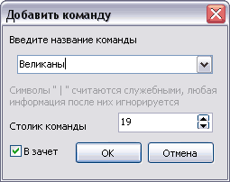

| Работа с командами | версия 0.3, от 19 января 2006 г. |
|
Введение Основные термины Работа с командами Ввод ответов Подсчет результатов Сохранение игры Параметры программы Лицензионные условия Авторы Благодарности |
КомандыЗамечание: в программе предусмотрено участие в игре только команд, но это ограничение лишь словесное: команда может состоять из одного человека, тем самым, можно устраивать личные соревнования.
Регистрация команд Чтобы добавить команду в список зарегистрированных выберите первый пункт меню или нажмите Insert. Появится окно, в котором нужно ввести (или выбрать из списка известных) название добавляемой команды. По умолчанию программа предлагает посадить новую команду за первый свободный столик, а также позволить команде играть "в зачет". Однако все можно изменить: для изменения столика, за которым будет играть команда, просто впишите его в соответствующую ячейку (или измените мышкой), а для того, чтобы результаты команды не засчитывались, просто уберите галочку напротив слов "В зачет" (см. рисунок). Для добавления команды теперь можно нажать "OK" или Enter. Команда добавится, если команды с таким названием еще не существует, или введеный столик еще не занят. Программа будет предлагать вводить новые команды, пока Вы не закроете это окно, нажав кнопку "Отмена" или Escape. Дисквалификация (удаление)Чтобы удалить команду из списка зарегистрированных команд, выберите пункт "Убрать..." из меню "Команды". Появится диалоговое окно, в котором программа спросит номер столика удаляемой команды. При нажатии кнопки "OK", если введенный номер столика занят какой-либо командой, она будет удалена из зарегистрированных, столик автоматически освободится, а название команды перейдет в список известных программе. Предупреждение: будьте внимательны с удалением команд, так как информация об ответах команды после ее удаления потеряется из памяти компьютера! Замечание: вместо дисквалификации можно перевести команду в режим игры "вне зачета". Для этого наведите курсор мыши на строку команды и нажмите правую кнопку мыши. Появится контекстное меню, в котором присутствуют всего два пункта: "в зачет" и "не в зачет". Режим, в котором сейчас находится команда, помечен галочкой. Чтобы перевести ее в другой, просто выберите его в этом меню. Переход к команде за столикомВо время игры бывает удобно не искать команду вручную, а быстро перейти к нужному столику. Для этого выберите пункт меню "Перейти к..." (Ctrl+F) и введите номер интересующего Вас столика. По умолчанию программа перейдет к первому вопросу данной команды, для того, чтобы оставаться в том вопросе, где Вы сейчас находитесь, измените параметр "Переходить к вопросу #1". Параметр "Помечать после перехода" помогает сразу после перехода к команде "щелкнуть" мышкой по выделенной команде в текущем столбце (если введенный столик занят). При работе с большим количеством команд удобно воспользоваться контактным сканером для ввода большого количества ответов команд. Контактный сканер работает как клавиатура и подключить его очень просто. Такие установлены в большинстве современных супермаркетов (и не только). Стоит сканер Cipher1000K не очень дорого, в Новосибирске его можно купить за 2400 рублей. Как использовать сканер?Чтобы при вводе ответов нужную команду не искать самостоятельно, можно отпечатать специальные бланки ответов (пункт меню Игра, Бланки ответов...Ctrl+P). Лучше всего подходит для этих целей лазерный принтер. Бланк ответа состоит из
Сканер работает как клавиатура. Считав штрих-код без номера вопроса, программа пометит команде со считанным номером ответ на текущий вопрос. Повторное считывание сканером отменит это действие. И далее — по циклу. Известные командыПрограмма позволяет следить за результатами команд в течение игрового сезона. Для этого нужно, чтобы каждый раз команда играла под одним и тем же названием. Так как в цифровом виде каждая опечатка может привести к непониманию компьютером, были придуманы "Известные названия команд". Что это такое? Это список названий команд, которые хранятся в памяти компьютера и написание которых не обязательно помнить побуквенно. Чтобы получить такой список, нужно:
После совершенных действий при регистрации команды ее название можно выбрать из выпадающего списка известных названий команд. Если в файле результатов была информация о лиге команды, она также перенесется в список "Известных названий команд". Однако при добавлении эта информация будет проигнорирована (она нужна лишь человеку, который проводит регистрацию команд, для контроля пришедших играть за определенную лигу) |